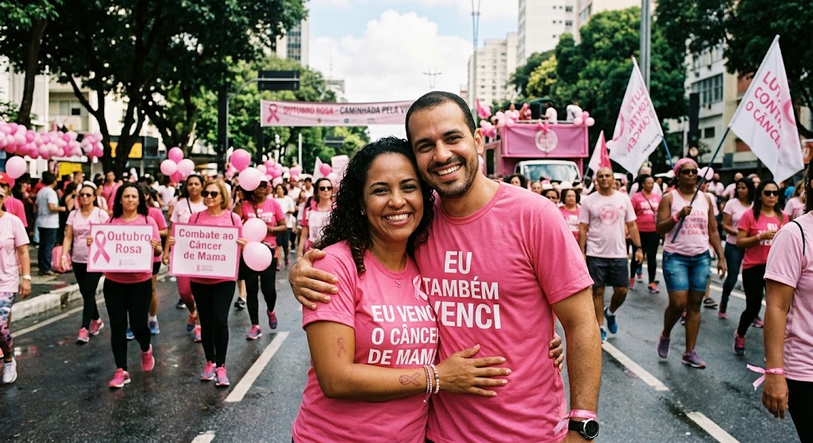
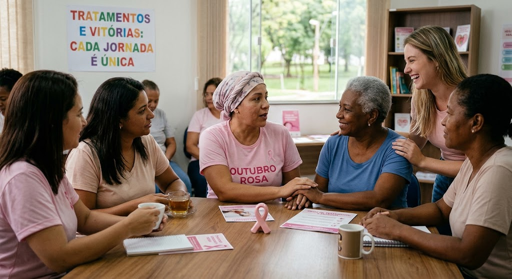

Conheça seu corpo
Observe mudanças nas mamas e procure atendimento se notar algo diferente ou persistente. Nem toda alteração é câncer, mas merece avaliação profissional.
A Aureola acredita que informação clara, atenção à saúde e apoio fazem diferença. Conheça mais sobre o câncer de mama e saiba onde buscar orientação.
Conheça formas de se cuidarConscientização, conversa e apoio.
É uma doença que acontece quando células da mama passam a crescer de forma desordenada. Existem diferentes tipos, e cada caso precisa de avaliação e acompanhamento por profissionais de saúde.
O câncer de mama pode afetar mulheres e, com menor frequência, homens. Conhecer o próprio corpo e ter acesso a informações confiáveis ajuda a procurar atendimento quando necessário.

A conscientização sobre a saúde das mamas também inclui os homens.
Cuidar da saúde é manter acompanhamento e buscar orientação. Perceber mudanças e conversar com um profissional pode ajudar a esclarecer dúvidas e avaliar cada situação.
Observe mudanças nas mamas e procure atendimento se notar algo diferente ou persistente. Nem toda alteração é câncer, mas merece avaliação profissional.
Converse com uma equipe de saúde sobre seu histórico, suas dúvidas e quais cuidados são adequados para você.
Cada pessoa tem uma história e necessidades próprias. Evite substituir uma consulta por informações encontradas na internet.
Caminhadas e encontros de conscientização aproximam pessoas, compartilham informação e oferecem espaço para acolhimento. Participe de atividades organizadas por grupos e instituições da sua região.
A imagem ao lado representa ações coletivas de informação e apoio.

Informação e acolhimento fazem parte da jornada de cuidado.
Os tratamentos dependem do tipo e do estágio da doença, além das características e necessidades de cada pessoa. A equipe de saúde explica as opções e acompanha as decisões ao longo do cuidado.
Receber um diagnóstico pode trazer muitas dúvidas. Buscar apoio profissional, conversar com pessoas de confiança e conhecer redes de acolhimento pode ajudar durante esse período.
No Brasil, você pode começar pela Unidade Básica de Saúde (UBS) mais próxima. A equipe poderá avaliar seu caso, orientar sobre exames e, quando indicado, encaminhar para outros serviços do SUS.
Se você notou uma alteração ou tem dúvidas sobre seu histórico, procure uma unidade de saúde. Em caso de sintomas, não espere por uma campanha ou data específica para buscar orientação.